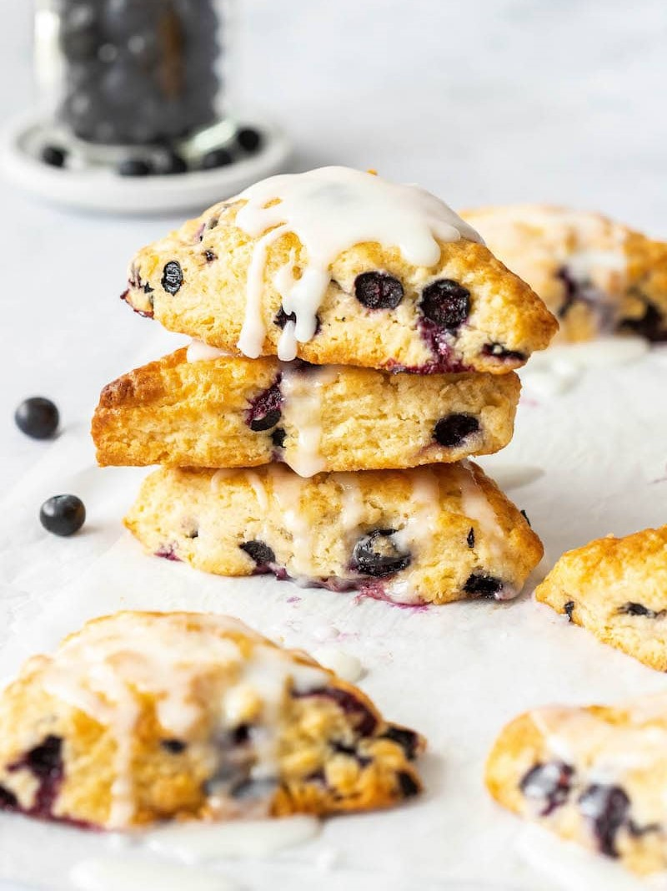

blueberry scone recipe

what you'll need
- 2 cups all-purpose flour (240g)
- ⅓ cup granulated sugar plus more for sprinkling (66g)
- 2 teaspoons baking powder
- ½ teaspoon salt
- ½ cup cold unsalted butter cubed (113g)
- 1 cup fresh or frozen blueberries (6oz / 170g)
- zest of 1 lemon
- ¾ cup heavy cream (180mL)
- 1 large egg
follow these steps
- In a large bowl, whisk together flour, sugar, baking powder, and salt. Add butter and work into the flour mixture with a pastry blender or by pressing the pieces between your fingers until they are about the size of peas. Stir in the blueberries and lemon zest.
- In a small bowl, whisk together the cream and egg. Pour over the flour mixture. Mix together with your hands or a silicone spatula just until the mixture is mostly moistened (it should still be a little crumbly).
- Turn out the dough onto a lightly floured surface. Knead it gently a few times to shape it into a ball. Press the dough into an 8-inch circle. Cut into 8 wedges.
- Place wedges on a small parchment or silicone-lined baking sheet and freeze for 20 minutes.
- Meanwhile, preheat the oven to 400F.
Transfer scones to a large baking sheet, placing them about 2 inches apart. Brush lightly with more cream and sprinkle with sugar.
- Bake for 20 to 25 minutes or until the tops are lightly browned and the bottom edges are golden. Let cool for at least 10 minutes before serving.